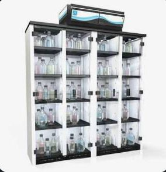

Le formol et le stockage ventilé
Le formol fixe parfaitement les tissus, et c'est justement ce qui le rend dangereux pour ceux qui le respirent. Toute l'organisation de la macroscopie et du stockage vise à garder ses vapeurs loin du visage du technicien.
Un agent CMR
Le formol (formaldéhyde, CH₂O) est classé CMR : cancérogène, mutagène, reprotoxique. La réglementation impose la prévention à la source, le confinement et la ventilation. La protection collective passe avant la protection individuelle.
Valeurs limites d'exposition professionnelle (VLEP)
| Exposition | Limite |
|---|---|
| 8 heures (exposition longue) | 0,3 ppm (0,37 mg/m³) |
| 15 minutes (pics) | 0,6 ppm (0,74 mg/m³) |
Ventilation et captage (règles INRS)
- Vitesse de captage : au moins 0,5 m/s, mesurée au point de manipulation le plus éloigné de l'aspiration.
- Sens du captage : par le bas ou par un dosseret aspirant. L'aspiration vers le haut (type hotte de cuisine) est à proscrire : elle fait passer les vapeurs devant les voies respiratoires du technicien.
- Traitement de l'air : rejet à l'extérieur du bâtiment (après filtration si nécessaire), ou passage dans une enceinte à recyclage d'air filtré (ETRAF) avec filtres à charbon actif spécifiques au formaldéhyde.
- Dépression du local : la pièce d'anapath reste en dépression constante, d'au moins 10 Pa par rapport aux circulations communes, pour que le gaz ne se propage pas.
L'armoire ventilée de stockage
Les pièces et flacons fixés au formol émettent des vapeurs. L'armoire ventilée, souvent en acier inoxydable, stocke en sécurité les échantillons fixés et les réactifs : ses vapeurs sont aspirées vers le haut et évacuées dehors par un ventilateur externe ou intégré.
- Stockage des échantillons au formol : pas d'accumulation de vapeurs dans le laboratoire.
- Ventilation et dépression : armoire en dépression, raccordée à l'extraction, ou équipée d'un caisson de filtration au charbon actif à remplacer régulièrement.
- Conformité : normes de ventilation et de résistance au feu, comme la NF EN 14470-1 pour les liquides inflammables.
| Type | Particularité |
|---|---|
| Armoire spéciale formol (filtrée ou raccordée) | Étagères ajourées en inox (AISI 304) pour que l'air circule autour des bacs, bac de rétention au fond |
| Armoire de sécurité multirisque ou anti-feu | Sépare les solvants inflammables des acides et des bases, compartiments ventilés indépendants |
Variantes : modèle de base sans fond perforé, modèle à double fond perforé (ventilation homogène sur toute la hauteur), modèle sur mesure.

À retenir
Formol : CMR. VLEP : 0,3 ppm sur 8 h, 0,6 ppm sur 15 min.
Captage par le bas ou par l'arrière, jamais vers le haut ; au moins 0,5 m/s au point le plus éloigné.
Local en dépression d'au moins 10 Pa ; air rejeté dehors ou filtré au charbon actif (ETRAF).